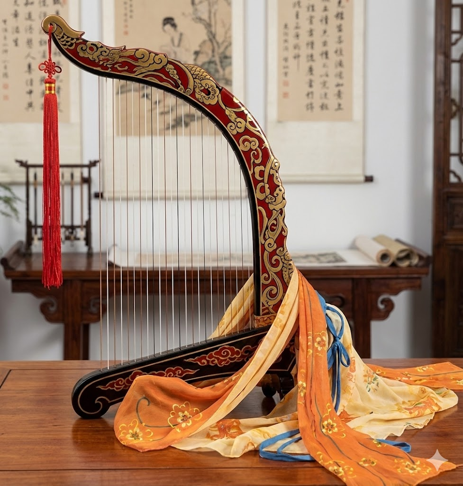

唐音再引
〈李凭箜篌引〉诗境音乐雅集
盛唐的声响，究竟是何种模样？是长安月下的捣衣声，还是边塞风沙中的羌笛怨？
今秋，憩园试图以现代音乐语言，重新叩问那段被时光封存的听觉记忆。
由憩园主人燕筠竹发起并策划，我们不仅是在复刻一场演出，更是在探寻古典诗意在当下的共鸣。
“昆山玉碎凤凰叫，芙蓉泣露香兰笑。”
—— 李贺《李凭箜篌引》
在这场特别的雅集中，我们将一同描绘李长吉笔下的瑰丽声画，于光影与旋律交织间，重返那个想象力奔腾的夜晚。

声动裂石
我们将尝试复刻唐朝李凭箜篌表演的盛况。特别献演：憩园主人的爱女将亲自登台献技，以家传技艺演绎盛唐遗韵。

器韵千年
其中包括一把音色极其清越的宋代洞箫，以及散落在历史长河中的古代乐器残件。来宾可于雅集前后近距离凝视。
时间 / Time
2015年X月X日（周六）
19:00 - 21:00
地点 / Location
憩园 · 隐山厅
(具体地址将于确认预约后告知)
席位 / Seats
仅设 30 席
Private Event
仅限会员致电预约 / VIP Reservation
请拨打会员专属专线
* 请于工作日 10:00 - 17:00 致电，需核验会员身份